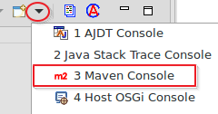
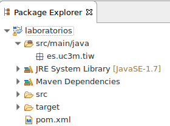
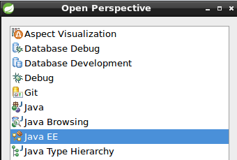
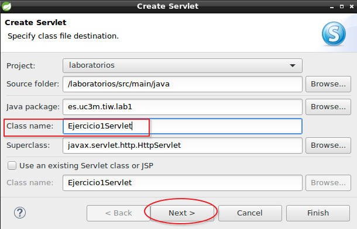
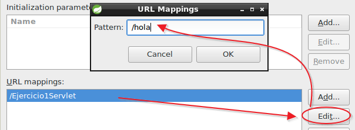
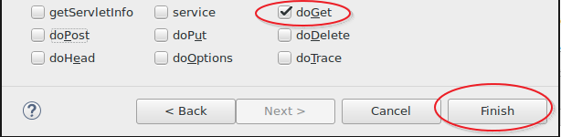
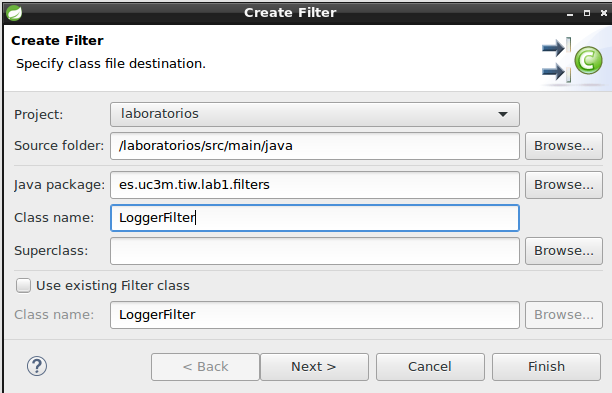
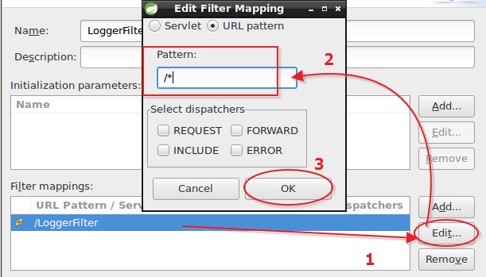

Lab 1. Desarrollo web
- Primer proyecto
- Ejercicio1. HolaMundo
- Ejercicio2. Cabeceras
- Ejercicio3. Parametros
- Ejercicio4. Parametros por POST
- Ejercicio5. JSP
- Ejercicio6. ServletConfig y atributos
- Ejercicio7. Sesiones
- Ejercicio8. Filtro logger
- Ejercicio9. Filtros, Sesiones, Peticiones y Contexto
- Ejercicio10. Taglibs, Lenguaje de Expresiones y dominios
Primer proyecto
- Abre una consola de comandos (Ctrl+T)
- Crea un directorio tiwlabs: (mkdir tiwlabs)
- cd tiwlabs
- Escribe el siguiente comando:
mvn archetype:generate -DarchetypeGroupId=org.codehaus.mojo.archetypes -DarchetypeArtifactId=webapp-javaee7
Responde a las preguntas que aparecen de la siguiente manera (pulsa intro para pasar a la siguiente pregunta):
Define value for property 'groupId': : es.uc3m.tiw
Define value for property 'artifactId': : laboratorios
Define value for property 'version': 1.0-SNAPSHOT: : (intro para aceptar)
Define value for property 'package': es.uc3m.tiw: : (intro)
Confirm properties configuration:
groupId: es.uc3m.tiw
artifactId: laboratorios
version: 1.0-SNAPSHOT
package: es.uc3m.tiw
Y: : (Escribe Y y pulsa intro)
Tras aparecer el siguiente mensaje de éxito:
[INFO] ----------------------------------------------------------------------------
[INFO] Using following parameters for creating project from Archetype: webapp-javaee7:1.1
[INFO] ----------------------------------------------------------------------------
[INFO] Parameter: groupId, Value: es.uc3m.tiw
[INFO] Parameter: artifactId, Value: laboratorios
[INFO] Parameter: version, Value: 1.0-SNAPSHOT
[INFO] Parameter: package, Value: es.uc3m.tiw
[INFO] Parameter: packageInPathFormat, Value: es/uc3m/tiw
[INFO] Parameter: package, Value: es.uc3m.tiw
[INFO] Parameter: version, Value: 1.0-SNAPSHOT
[INFO] Parameter: groupId, Value: es.uc3m.tiw
[INFO] Parameter: artifactId, Value: laboratorios
[INFO] project created from Archetype in dir: /home/tiw/tiwlabs/laboratorios
[INFO] ------------------------------------------------------------------------
[INFO] BUILD SUCCESS
[INFO] ------------------------------------------------------------------------
Ya tendrás un proyecto creado.
Importar el proyecto en eclipse
- Abre STS
- File -> Import -> Maven -> Existing Maven projects -> Next
- Botón Browse. Localiza el proyecto generado (/home/tiw/tiwlabs/laboratorios) -> Finish
- Abre la consola de maven en la pestaña inferior:
- 
- Verás como maven descarga todas las dependencias necesarias para poder configurar el proyecto.
- Cuando termine verás una estructura creada con la M de maven y la J de java
- 
Ejercicio1. HolaMundo
Vamos a iniciarnos en el desarrollo de Servlets con un primer ejemplo:
- Primero cambia la perspectiva:
- Pulsa en la esquina superior derecha en el botón Open perspective
- Selecciona Java EE
- 
- Click derecho sobre laboratorios->Java Resources->src/main/java->es.uc3m.tiw y selecciona New Package
- Escribe el siguiente nombre de paquete: es.uc3m.tiw.lab1
- Sobre el nuevo paquete (es.uc3m.tiw.lab1) click derecho y selecciona New -> Servlet y llámalo Ejercicio1Servlet
- 
- Cambia el URL mapping en la siguiente pantalla:
- 
- En la siguiente pantalla selecciona solamente el método doGet y pulsa Finish
- 
- Elimina el código autogenerado dentro del método doGet y escribe el siguiente:
protected void doGet(HttpServletRequest request, HttpServletResponse response) throws ServletException, IOException {
PrintWriter out = response.getWriter();
out.println("Hola");
out.close();
}
- Salva los cambios e inicia el servidor Glassfish
- Click derecho sobre el proyecto laboratorios y selecciona Run As -> Run on Server
- Selecciona el servidor Glassfish en la siguiente pantalla, pulsa Next y Finish
- Tras unos momentos se abrirá el navegador por defecto y verás un mensaje Hello World, pero ese no es el mensaje que hemos escrito:
- Escribe la siguiente url en el navegador: http://localhost:8080/laboratorios/hola y verás el mensaje real.
- Acabas de finalizar el primer ejercicio.
Ejercicio2. Cabeceras
Partimos de los conocimientos adquiridos en el ejercicio anterior. En esta ocasión vamos a extraer y mostrar toda la información que se encuentran en las cabeceras del cliente.
Primero arreglaremos un problema que aparece en la pestaña inferior “Problems” indicando que la versión del proyecto usa java 1.7 y nosotros tenemos java 1.8 instalado.
- Abre la consola de eclipse: Menu Window->Show View->Console
- En la pestaña console, muestra la consola de maven como hiciste en el ejercicio anterior.
- Abre el fichero pom.xml del proyecto laboratorios (doble click sobre el fichero)
- En el editor que aparece haz clic sobre la pestaña inferior pom.xml para ver el código fuente.
- Localiza el siguiente código:
<plugin>
<groupId>org.apache.maven.plugins</groupId>
<artifactId>maven-compiler-plugin</artifactId>
<version>3.1</version>
<configuration>
<source>1.7</source>
<target>1.7</target>
<compilerArguments>
<endorseddirs>${endorsed.dir}</endorseddirs>
</compilerArguments>
</configuration>
</plugin>
- Cambia los valores source y target de 1.7 a 1.8
<source>1.8</source>
<target>1.8</target>
- En este momento eclipse mostrará un error con un aspa roja.
- Selecciona el proyecto laboratorios con el botón derecho del ratón y elige Maven->Update Project->Ok
- Se eliminarán todos los errores y el proyecto estará configurado con JDK 1.8
- Puedes cerrar el fichero pom.xml
Ahora comenzaremos con el desarrollo del ejercicio.
- Crea un nuevo servlet en el paquete es.uc3m.tiw.lab1 que se llame Ejercicio2Servlet
- En el URL mapping cambia el string por cabeceras
- Selecciona el método doGet
- Escribe el código necesario para sacar todas las cabeceras del cliente que se conecta con el navegador.
- Extrae también información relativa a su dirección de conexión, la url solicitada, el protocolo que ha usado, el servidor al que se ha conectado y el idioma usado.
Para extraer toda esa información necesitarás la documentación del API servlet de Java en concreto ServletRequest 1 y HttpServletRequest 2
Ejercicio3. Parametros
En esta ocasión vamos a reutilizar el código del ejercicio 1
- Crea un nuevo servlet en el paquete lab1 que se llame Ejercicio3Servlet
- En el URL mapping cambia la cadena por /parametros
- Copia el código del ejercicio 1
- Crea el código necesario para que ahora el servlet imprima el mensaje: Hola nombre donde nombre será dinámicamente insertado por QUERY_STRING3
- La URL de acceso será:
http://localhost:8080/laboratorios/parametros?nombre=JuanEn este caso el servlet responderá: Hola Juan.
Para este ejercicio necesitarás la documentación de la clase HttpServletRequest2
Ejercicio4. Parametros por POST
- Crea un nuevo servlet con nombre Ejercicio4Servlet
- URL Mapping: /login
- Selecciona doPost y doGet
- Crea el código de un formulario que envíe los datos al servlet login. Hazlo dentro del método doGet
<form action="login" method="post">
<fieldset>
<legend>Login</legend>
<label for="nom">Nombre:</label>
<input type="text" id="nom" name="nombre"/>
<br>
<label for="password">Clave</label>
<input type="password" id="password" name="clave"/>
<br>
</fieldset>
<input type="submit" value="Enviar">
</form>
- El servlet debe validar al usuario y clave enviado emitiendo una respuesta en caso favorable y otra en caso de error en el método__doPost__.
- Las respuestas deben ser con cabecera text/html y código formateado
- El usuario válido es: usuario1 con password1
- La respuesta válida debe saludar al usuario con su nombre de usuario
- La respuesta inválida debe mostrar un mensaje indicando que no tiene acceso y un enlace para volver al formulario de login
Documentación necesaria HttpServletRequest2
Ejercicio5. JSP
Incorporar html dentro del propio servlet no es muy adecuado. En este ejercicio sacaremos el código html y lo serviremos desde páginas dinámicas.
- Crea una página JSP llamada login.jsp dentro de laboratorios->Deployed Resources->webapp con botón derecho->new->JSP File
- Incopora el código html de la página login.html
- Crea dos páginas jsp más:
- listado.jsp: contendrá el código que muestra el Ejercicio4Servlet en caso de que exista el usuario
- error.jsp: mostrará el mensaje de error actual del Ejercicio4Servlet
- Borra el código que has incorporado a las jsps del Ejercicio4Servlet y susitúyelo por un RequestDispatcher haciendo un forward
- Renombra el Ejercicio4Servlet a LoginServlet (Pulsa con el botón derecho sobre la clase Ejercicio4Servlet y selecciona Refactor->Rename)
Con esto conseguimos separar la lógica de negocio de la presentación. Para Este ejercicio necesitarás la documentación de RequestDispatcher4
Ejercicio6. ServletConfig y atributos
En este ejercicio el servlet LoginServlet cargará una lista de nombres de usuario en el método init() y la hará disponible mediante el objeto request a la página listado.jsp que recorrerá la lista y pintará en una tabla los nombres de los usuarios.
- Crear un
ArrayListde tipo String en el métodoinit(ServletConfig config)y llénalo con varios nombre de usuarios. - Cuando el usuario sea válido envíale a la página de listado junto con los datos de usuario.
- Necesitarás modificar el objeto request para añadir atributos.
- En la página listado.jsp recupera el atributo de la lista y escribe una tabla dinámica con los datos del ArrayList
Para este ejercicio necesitarás la documentación de ServletRequest 1 en concreto
getAttributeysetAttribute
Ejercicio7. Sesiones
El objetivo de este ejercicio es que el usuario no tenga que pasar una y otra vez por el formulario de login para acceder al listado de nombres si ya se ha autenticado.
- Crea un
HttpSessionen el LoginServlet y añade un token a la sesión con el valorautenticado=truesi el usuario es correcto yautenticado=falseen caso contrario - LoginServlet debe controlar que si el usuario ya se ha autenticado puede acceder directamente o devolverle al formulario de login en caso contrario.
- En este caso, añade un atributo “mensaje” al request y dicho mensaje debe ser leído en la página login.jsp.
- El mensaje debe poner que el usuario no es válido
La documentación en este ejercicio será el API HttpSession5
Ejercicio8. Filtro logger
Vamos a crear un filtro que permita controlar y trazar todos los pasos del usuario. Reutilizaremos parte del código del servlet de las cabeceras.
- Crea un nuevo paquete en
es.uc3m.tiw.lab1.filters - Crea un nuevo Filtro en dicho paquete (New->Filter)
- Pon de Nombre: LoggerFilter
- 
- Pulsa Next y en la siguiente pantalla cambia el URL pattern por /*
- 
- Next->Finish
- Dentro del método
doFilterpon el código necesario y termina conchain.doFilter(request,response)
El filtro debe mostrar por consola un registro de navegación del usuario del tipo:
<fecha> - <ip> - <protocolo> - <método> - <url>. Un filtro avanzado registraría estos datos en un log del sistema, pero simplemente lo sacamos por consola por propósitos del laboratorio.Ahora al navegar normalmente verás por consola todos tus movimientos del tipo:
26-08-2016 11:28:37 - 0:0:0:0:0:0:0:1 - HTTP/1.1 - GET - http://localhost8080/laboratorios/login
26-08-2016 11:28:50 - 0:0:0:0:0:0:0:1 - HTTP/1.1 - POST - http://localhost8080/laboratorios/login
26-08-2016 11:29:32 - 0:0:0:0:0:0:0:1 - HTTP/1.1 - GET - http://localhost8080/laboratorios/cabeceras
Ejercicio9. Filtros, Sesiones, Peticiones y Contexto
Aunque permitimos que el usuario no necesite volver a pasar por el formulario de login mediante sesiones, eso no impide que un usuario que conozca la página listado.jsp pueda acceder directamente a ella sin autenticarse.
Por lo que en este ejercicio se propone controlar el acceso a la página listado.jsp mediante un filtro que compruebe si el usuario dispone del token de autenticación en sesión.
NOTA: aunque el usuario pueda acceder directamente al listado.jsp esta página devolverá un NullPointerException al no poder leer la lista de usuarios que el LoginServlet le envía por request. Por lo que se propone como mejora del código controlar este error, o bien incorporar la lista de usuarios en contexto.
En este ejercicio se pueden apreciar las diferencias entre:
- peticiones (request)
- sesiones
- filtros
- contexto
- Crea un nuevo filtro en el paquete filters
- Nombre: SecurityFilter
- URL pattern: /listado.jsp
- Pon el código necesario en el método doFilter para controlar si el usuario dispone de sesión para acceder, en caso contrario redirigirle al login.
Ejercicio10. Taglibs, Lenguaje de Expresiones y dominios
En este ejercicio vamos a refactorizar nuestras vistas añadiendo Expression Language (EL)6 y usando Taglibs JSTL7 para mejorarlas.
También vamos a sacar los datos del array de usuarios para hacerlo más dinámico y funcional mediante una capa de objetos de dominio.
- Modifica el código de login.jsp sustituyendo todo el código java por jstl y EL
- Haz lo mismo con la página listado.jsp
- Crea una clase java llamada Usuario que tenga las siguiente propiedades: